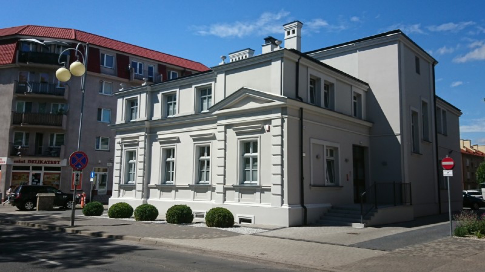

ARSMEDICA CENTRUM
Poradnia Podstawowej Opieki Zdrowotnej

62-800 KaliszJak dojechać
Lekarze POZ
Nasza przychodnia świadczy usługi w ramach umowy z NFZ w dniach od poniedziałku do piątku w godz od 8.00 do 18.00
Paweł AndrzejczakInternista
Medycyna rodzinna
Godziny przyjęć
- poniedziałek 8.00 - 13.00
- wtorek 13.00 - 18.00
- środa 8.00 - 13.00
- czwartek 8.00 - 13.00
- piątek zamiennie- dni parzyste od 13.00 - 18.00; dni nieparzyste 8.00 - 18:00
Piotr LisowskiSpecjalista medycyny rodzinnej
Godziny przyjęć
- poniedziałek 8.00 - 13.00
- wtorek 8.00 - 13.00
- środa 13.00 - 18.00
- czwartek 13.00 - 18.00
- piątek 8.00 - 13.00
Agnieszka Krawczyk - KubisiakSpecjalista medycyny rodzinnej
Godziny przyjęć
- poniedziałek 11.00 - 16.00
- wtorek 8.00 - 13. 00
- środa 8.00 - 13.00
- czwartek 8.00 - 13.00
- piątek zamiennie dni parzyste od 8.00 - 13.00; dni nieparzyste od 11.00 - 16.00
Medycyna rodzinna, pediatra Irena Grzeluszka-TobiaszLekarz Pediatra
Godziny przyjęć
- poniedziałek 09:00 - 14:00
- wtorek 09:00 - 12:30
- środa 11:00 - 16:00
- czwartek 13:00 - 18:00
- piątek 09:00 -13:00
Ewa MarciniakSpecjalista medycyny rodzinnej
Godziny przyjęć
- poniedziałek 8.00 - 13.00
- wtorek 13.00 - 18.00
- środa 8:00 - 13:00
- czwartek 8:00 - 13:00
- piątek zamiennie- dni parzyste od 13.00 - 18.00; dni nieparzyste 8.00 - 13.00
lekarz Paweł KrzywdaRezydent medycy rodzinnej
Godziny przyjęć
- wtorek 15:00 - 18:00
- piątek 15:00 - 18:00
Prywatne gabinety specjalistyczne
Rejestracja do specjalistów
REJESTRACJA DO W/W LEKARZY : od poniedziałku do piątku w godz. 8:00 do 16:00 pod numerem tel. 500 308 305
- Ortopeda dr n. med. Piotr Wojciechowski - przyjęcia we wtorki od godziny 18.00, rej. 500 308 305
- Neurolog dr n. med. Karolina Tworek rej. 500 308 305
- Kardiolog lek. Agata Serwecińska - przyjęcia w poniedziałki rej. 500 308 305
- Fizjoterapia uroginekologiczna mgr Aneta Kliber rej. tel 881 693 188
- Lekarz Medycyny Pracy i Transportu lek. Piotr Lisowski od poniedziałku do czwartku rej. 500 308 305
Pozostali specjaliści
- Psychiatra lek. Jadwiga Liberowicz - Przybył - porady poniedziałek i środa; rej. tel. 692 685 922
- Chirurg naczyniowy dr n. med. Jarosław Kasperczak - przyjęcia poniedziałek i czwartek od godz. 16;00; rej. tel. 607 051 894
- Masażystka: Gohar Meliksetyan zabiegi od poniedziałku do piątku od godz 12:00 rej. tel. 880 683 065
- Poradnia Psychologii Pracy mgr Izabela Płucienniczak - poniedziałek 08:00- 15:00; czwartek 12:00 - 18:00 rej. tel. 503 114 595
- Psycholog mgr Justyna Prus - Buczak - rej. tel. 601 775 701
- Dietetyk Wiktoria Szczęsna rej. tel. 791 755 792
- Pulmonolog lek. Waldemar Bakalarz w czwartki rej. tel. 500 308 305
- Fizjoterapia Urologiczna mgr. Aneta Kliber rej. tel 881693188
Godziny i dojazd
Godziny otwarcia
Nasza przychodnia świadczy usługi w ramach umowy z NFZ w dniach od poniedziałku do piątku w godz od 8.00 do 18.00
Gabinety lekarskie, gabinet zabiegowy:
poniedziałek - piątek 7:30 - 18.00
Laboratorium
Punkt pobrań badań laboratoryjnych czynny jest od poniedziałku do piątku w godz od 7.30 do 11.00.
Odbiór wyników w dniu następnym od godz 14.00
Laboratorium
Opieka nocna i w dni świąteczne
Po godz 18.00 i w dni świąteczne opiekę medyczną świadczy Wojewódzki Szpital Zespolony w Kaliszu , ul. Poznańska 79 (budynek Pogotowia)
62 765 16 54Warto wiedzieć
Dla pacjenta
Zadbaj o zdrowie – skorzystaj z profilaktyki i opieki koordynowanej
Zachęcamy naszych pacjentów do udziału w programach profilaktycznych realizowanych w przychodni:
- Programie profilaktyki chorób układu krążenia (CHUK);
- programie „Moje Zdrowie – bilans zdrowia osoby dorosłej”
Programy te umożliwiają ocenę stanu zdrowia, identyfikację czynników ryzyka oraz wczesne wykrywanie chorób, zanim pojawią się wyraźne dolegliwości.
Zapraszamy również do korzystania ze świadczeń realizowanych w ramach opieki koordynowanej. Pozwala ona lepiej zaplanować diagnostykę i leczenie chorób przewlekłych oraz zapewnia pacjentowi bardziej kompleksową opiekę zespołu medycznego.
Osoby zainteresowane udziałem w programach profilaktycznych lub skorzystaniem z opieki koordynowanej zapraszamy do kontaktu z rejestracją poradni. Warto również zapytać o dostępne możliwości swojego lekarza lub pielęgniarkę.
Nie czekaj na objawy – profilaktyka daje największe korzyści wtedy, gdy działamy odpowiednio wcześnie.
SZCZEPIENIA PRZECIW KRZTUŚCOWI
Masz bezpośredni kontakt z noworodkami lub niemowlętami w domu albo w pracy? Masz dziecko w wieku przedszkolnym, jesteś w ciąży albo ją planujesz? Czy jako osoba dorosła przyjmujesz zalecaną dawkę przypominającą szczepionki co 10 lat w celu utrzymania odporności? Wykonaj szczepienie przeciw krztuścowi sobie i swojemu dziecku w naszej placówce .
Sklep medyczny
Zapraszamy do sklepu medycznego w naszej placówce w dniach od poniedziałku do piątku, w godz. od 8:00 do 16:00.
Realizujemy wnioski NFZ w ramach zaopatrzenia w środki pomocnicze.
Zapewniamy fachową pomoc w doborze produktów.
Komunikat
KomunikatZawiadomienie o naruszeniu ochrony danych osobowych
Co się stało?
Z przykrością informujemy, że system naszego podmiotu przetwarzającego, tj. MyDr Sp. z o.o. z siedzibą w Warszawie, padł ofiarą cyberataku, w wyniku którego doszło do naruszenia poufności Pani/Pana danych osobowych, a w niektórych przypadkach również danych osobowych Pani/Pana przedstawiciela ustawowego lub osoby upoważnionej do dostępu do dokumentacji medycznej.
Chcielibyśmy podkreślić, że nie oznacza to, że Pani/Pana dane zostały odczytane, wykorzystane lub upublicznione. Zespoły MyDr oraz zewnętrzni eksperci stale monitorują sytuację i nie wykryli, aby dane objęte incydentem zostały publicznie udostępnione. Przeprowadzone przez MyDr analizy forensic potwierdziły, że incydent został opanowany oraz że nie ma dowodów wskazujących na dalszy nieuprawniony dostęp do systemów.
O jakie dane chodzi?
Ustalenia dokonane przez MyDr przy wsparciu ekspertów zajmujących się zewnętrzną analizą wskazują, że incydent obejmował ograniczony zakres danych przed 12 kwietnia 2024 r. oraz, w nielicznych przypadkach, danych zawartych w anulowanych skierowaniach na badania medyczne wystawionych po tej dacie.
Dane pacjenta przed 12 kwietnia 2024 r. Jeżeli incydent objął Pani/Pana dane przetwarzane przed 12 kwietnia 2024 r., wśród danych objętych incydentem mogły znaleźć się Pani/Pana: imię, nazwisko, adres zamieszkania, dane kontaktowe, numer PESEL, dane dotyczące zdrowia, ubezpieczenia społecznego, i (jeśli zostały podane) informacje dotyczące pracodawcy, lub inne dane identyfikacyjne.
Dane w anulowanych skierowaniach. Jeżeli incydent objął Pani/Pana dane zawarte w anulowanych skierowaniach na badania medyczne, wśród danych objętych incydentem mogły znaleźć się Pani/Pana: imię, nazwisko, adres zamieszkania, dane kontaktowe, numer PESEL oraz ograniczony zakres danych dotyczących zdrowia zawartych w anulowanych skierowaniach.
Dane przedstawiciela ustawowego lub osoby upoważnionej do dostępu do dokumentacji medycznej. Jeżeli jest Pani/Pan przedstawicielem ustawowym pacjenta lub osobą upoważnioną do dostępu do jego dokumentacji medycznej, zakres danych objętych incydentem mógł zawierać Pani/Pana dane wskazane w tej dokumentacji. W zależności od zakresu przekazanych informacji może to dotyczyć takich danych jak: imię i nazwisko, adres zamieszkania, dane kontaktowe, numer PESEL oraz informacja o stopniu pokrewieństwa lub rodzaju relacji z pacjentem.
Mimo że prowadzony przez MyDr stały monitoring nie wykazał dotychczas żadnych przypadków wykorzystania ani publicznego ujawnienia danych, nie można wykluczyć, że, ze względu na charakter incydentu, w określonych okolicznościach może on potencjalnie wiązać się z wysokim ryzykiem dla praw lub wolności osób, których dane zostałyby niewłaściwie wykorzystane. Chcemy pomóc Pani/Panu zachować bezpieczeństwo na wypadek zmiany okoliczności, dlatego przekazujemy informacje o ewentualnych konsekwencjach oraz zalecanych środkach ostrożności, które mogą pomóc w ochronie danych osobowych i ograniczeniu potencjalnych skutków incydentu.
Jakie ewentualne konsekwencje zidentyfikowaliśmy?
Wśród danych objętych incydentem mógł znajdować się numer PESEL, który w połączeniu z imieniem i nazwiskiem oraz danymi kontaktowymi, w określonych sytuacjach, mógłby posłużyć osobom nieuprawnionym do działań niezgodnych z prawem. W szczególności, jeśli dane te zostałyby publicznie ujawnione, mogłyby zostać użyte przez osoby nieuprawnione do:
- zaciągnięcia kredytu, pożyczki lub zawarcia innych umów bez Pani/Pana wiedzy;
- uzyskania dostępu do Pani/Pana danych dotyczących zdrowia w instytucjach medycznych, w których uwierzytelnianie osób następuje przy pomocy numeru PESEL.
Incydent mógł dotyczyć również danych dotyczących zdrowia, których nieuprawnione użycie może naruszać Pani/Pana prawa, w szczególności, gdyby osoby trzecie próbowały wykorzystać te informacje:
- w sposób niekorzystny dla Pani/Pana, w tym prowadzący do naruszenia Pani/Pana praw lub gorszego traktowania w środowisku zamieszkania;
- w celu dokonania oszustwa, np. poprzez kontakt z Panią/Panem lub bliskimi w celu zaoferowania alternatywnych metod leczenia zdiagnozowanych u Pani/Pana chorób.
Raz jeszcze chcemy podkreślić, że warto zachować ostrożność i czujność, jednak na obecnym etapie prowadzony przez MyDr monitoring nie wykazał żadnych przypadków wykorzystania ani publicznego ujawnienia danych. Nie ma zatem powodów do niepokoju.
Jakie działania może Pan/Pani podjąć?
W przypadku numeru PESEL:
- można bezpłatnie zastrzec numer PESEL w aplikacji mobilnej mObywatel, przez Internet na stronie mObywatel.gov.pl lub osobiście w Urzędzie Gminy (Miasta). Instytucje finansowe są obecnie zobligowane weryfikować przy zawieraniu umów, czy PESEL jest zastrzeżony, co ogranicza ryzyko użycia danych do nieuprawnionego zaciągania zobowiązań na szkodę innych osób. Zastrzeżenie PESEL nie blokuje jednak możliwości rejestracji u lekarza, realizacji recepty czy załatwienia sprawy w urzędzie – więcej informacji pod linkiem: https://www.gov.pl/web/gov/zastrzez-swoj-numer-pesel-lub-cofnij-zastrzezenie;
- można poinformować inne placówki medyczne, w których świadczone są dla Pani/Pana usługi, iż osoby trzecie mogą chcieć wykorzystać Pani/Pana PESEL w celu przejścia procesu autoryzacji w tych jednostkach.
W przypadku danych dotyczących zdrowia:
- w razie potwierdzenia wykorzystania danych przez osoby nieuprawnione może Pani/Pan dochodzić względem nich ochrony swoich praw na podstawie właściwych przepisów w tym Kodeksu Cywilnego;
- warto zachować szczególną ostrożność wobec wszelkich kontaktów z nieznanymi osobami, które nie miały prawa znać historii Pani/Pana zdrowia, a które proponują Pani/Panu skorzystanie z oferowanych przez nie usług medycznych, pseudomedycznych lub terapeutycznych.
Bez względu na zakres danych osobowych, w przypadku podejrzenia, że zostały one wykorzystane niezgodnie z prawem, można zgłosić to na Policję. Informacje o sposobie zgłoszenia znajdują się pod adresem: https://www.gov.pl/web/gov/zglos-przestepstwo.
Podkreślamy ponownie, że prowadzony przez MyDr monitoring nie wykazał dotychczas żadnych przypadków wykorzystania ani publicznego ujawnienia danych.
Jakie działania zostały już podjęte?
Aby ograniczyć negatywne skutki wykrytego ataku MyDr Sp. z o.o., podjął następujące działania:
- niezwłocznie opanował i zakończył incydent, a także wdrożył dodatkowe, ukierunkowane środki techniczne i organizacyjne mające na celu zapobieganie podobnym incydentom w przyszłości;
- zaangażował wyspecjalizowaną firmę z zakresu cyberbezpieczeństwa w celu przeprowadzenia szczegółowej analizy incydentu;
- zgłosił incydent wyspecjalizowanej jednostce Policji - Centralnemu Biuru Zwalczania Cyberprzestępczości Policji i ściśle z nią współpracuje;
- współpracuje z Ministerstwem Cyfryzacji, Centrum e-Zdrowia, CSIRT NASK i CSIRT Centrum e-Zdrowia;
- współpracuje z Urzędem Ochrony Danych Osobowych;
- kontynuuje monitoring systemów w celu wykrycia ewentualnych skutków incydentu i niezwłocznego reagowania na pojawiające się zagrożenia;
- prowadzi stały monitoring internetu w celu wykrycia, czy dane, których dotyczy incydent, zostały upublicznione.
Nasza placówka - jako administrator Pani/Pana danych osobowych, po otrzymaniu zawiadomienia o naruszeniu od MyDr Sp. z o.o., dokonała zgłoszenia tego naruszenia do Prezesa Urzędu Ochrony Danych Osobowych.
Gdzie można uzyskać dalsze informacje?
W przypadku dodatkowych pytań dotyczących zakresu incydentu prosimy o kontakt dane@mydr.pl.
Z poważaniem
Zarząd Arsmedica sp. p. lekarzy
Lekarz Medycyny Pracy i Transportu Piotr Lisowski
Lekarz Ortopeda Piotr Wojciechowski
Usługi Pielęgniarskie i Informatyczne Joanna Urban